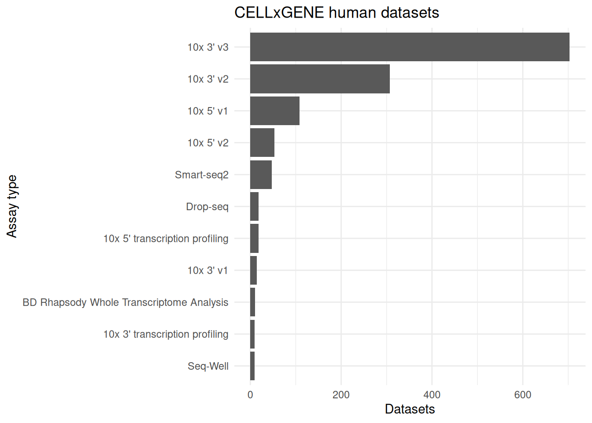

Last updated: 2025-11-12
Checks: 7 0
Knit directory: muse/
This reproducible R Markdown analysis was created with workflowr (version 1.7.1). The Checks tab describes the reproducibility checks that were applied when the results were created. The Past versions tab lists the development history.
Great! Since the R Markdown file has been committed to the Git repository, you know the exact version of the code that produced these results.
Great job! The global environment was empty. Objects defined in the global environment can affect the analysis in your R Markdown file in unknown ways. For reproduciblity it’s best to always run the code in an empty environment.
The command set.seed(20200712) was run prior to running
the code in the R Markdown file. Setting a seed ensures that any results
that rely on randomness, e.g. subsampling or permutations, are
reproducible.
Great job! Recording the operating system, R version, and package versions is critical for reproducibility.
Nice! There were no cached chunks for this analysis, so you can be confident that you successfully produced the results during this run.
Great job! Using relative paths to the files within your workflowr project makes it easier to run your code on other machines.
Great! You are using Git for version control. Tracking code development and connecting the code version to the results is critical for reproducibility.
The results in this page were generated with repository version 98e75c7. See the Past versions tab to see a history of the changes made to the R Markdown and HTML files.
Note that you need to be careful to ensure that all relevant files for
the analysis have been committed to Git prior to generating the results
(you can use wflow_publish or
wflow_git_commit). workflowr only checks the R Markdown
file, but you know if there are other scripts or data files that it
depends on. Below is the status of the Git repository when the results
were generated:
Ignored files:
Ignored: .Rproj.user/
Ignored: data/1M_neurons_filtered_gene_bc_matrices_h5.h5
Ignored: data/293t/
Ignored: data/293t_3t3_filtered_gene_bc_matrices.tar.gz
Ignored: data/293t_filtered_gene_bc_matrices.tar.gz
Ignored: data/5k_Human_Donor1_PBMC_3p_gem-x_5k_Human_Donor1_PBMC_3p_gem-x_count_sample_filtered_feature_bc_matrix.h5
Ignored: data/5k_Human_Donor2_PBMC_3p_gem-x_5k_Human_Donor2_PBMC_3p_gem-x_count_sample_filtered_feature_bc_matrix.h5
Ignored: data/5k_Human_Donor3_PBMC_3p_gem-x_5k_Human_Donor3_PBMC_3p_gem-x_count_sample_filtered_feature_bc_matrix.h5
Ignored: data/5k_Human_Donor4_PBMC_3p_gem-x_5k_Human_Donor4_PBMC_3p_gem-x_count_sample_filtered_feature_bc_matrix.h5
Ignored: data/97516b79-8d08-46a6-b329-5d0a25b0be98.h5ad
Ignored: data/Parent_SC3v3_Human_Glioblastoma_filtered_feature_bc_matrix.tar.gz
Ignored: data/brain_counts/
Ignored: data/cl.obo
Ignored: data/cl.owl
Ignored: data/jurkat/
Ignored: data/jurkat:293t_50:50_filtered_gene_bc_matrices.tar.gz
Ignored: data/jurkat_293t/
Ignored: data/jurkat_filtered_gene_bc_matrices.tar.gz
Ignored: data/pbmc20k/
Ignored: data/pbmc20k_seurat/
Ignored: data/pbmc3k.h5ad
Ignored: data/pbmc3k/
Ignored: data/pbmc3k_bpcells_mat/
Ignored: data/pbmc3k_export.mtx
Ignored: data/pbmc3k_matrix.mtx
Ignored: data/pbmc3k_seurat.rds
Ignored: data/pbmc4k_filtered_gene_bc_matrices.tar.gz
Ignored: data/pbmc_1k_v3_filtered_feature_bc_matrix.h5
Ignored: data/pbmc_1k_v3_raw_feature_bc_matrix.h5
Ignored: data/refdata-gex-GRCh38-2020-A.tar.gz
Ignored: data/seurat_1m_neuron.rds
Ignored: data/t_3k_filtered_gene_bc_matrices.tar.gz
Ignored: r_packages_4.4.1/
Ignored: r_packages_4.5.0/
Untracked files:
Untracked: analysis/bioc_scrnaseq.Rmd
Untracked: bpcells_matrix/
Untracked: data/Caenorhabditis_elegans.WBcel235.113.gtf.gz
Untracked: data/GCF_043380555.1-RS_2024_12_gene_ontology.gaf.gz
Untracked: data/arab.rds
Untracked: data/astronomicalunit.csv
Untracked: data/femaleMiceWeights.csv
Untracked: data/lung_bcell.rds
Untracked: m3/
Untracked: women.json
Unstaged changes:
Modified: analysis/isoform_switch_analyzer.Rmd
Note that any generated files, e.g. HTML, png, CSS, etc., are not included in this status report because it is ok for generated content to have uncommitted changes.
These are the previous versions of the repository in which changes were
made to the R Markdown (analysis/cellxgene_census.Rmd) and
HTML (docs/cellxgene_census.html) files. If you’ve
configured a remote Git repository (see ?wflow_git_remote),
click on the hyperlinks in the table below to view the files as they
were in that past version.
| File | Version | Author | Date | Message |
|---|---|---|---|---|
| Rmd | 98e75c7 | Dave Tang | 2025-11-12 | Available assays |
| html | 164872b | Dave Tang | 2024-04-08 | Build site. |
| Rmd | b3568c0 | Dave Tang | 2024-04-08 | CELLxGENE Census |
Following the documentation for the R package {cellxgene.census} which is part of CZ CELLxGENE Discover Census.
{cellxgene.census} provides an API to efficiently access the cloud-hosted Census single-cell data from R. In just a few seconds users can access any slice of Census data using cell or gene filters across hundreds of single-cell datasets.
Census data can be fetched in an iterative fashion for bigger-than-memory slices of data, or quickly exported to basic R structures, as well as {Seurat} or {SingleCellExperiment} objects for downstream analysis.
Install from the R-universe platform. If installing using Ubuntu/Debian, you may need to install the following libraries via APT:
In addition you must have at least cmake v3.21. Install
the {tiledbsoma} dependency first, since this takes some time to compile
and install, it’s better to fail first.
install.packages(
'tiledbsoma',
repos = c('https://tiledb-inc.r-universe.dev', 'https://cloud.r-project.org')
)Now install {cellxgene.census}, which should be a breeze now.
install.packages(
"cellxgene.census",
repos=c('https://chanzuckerberg.r-universe.dev', 'https://cloud.r-project.org')
)Now install {Seurat}.
install.packages("Seurat")Querying and fetching the single-cell data and cell/gene metadata
library("cellxgene.census")
packageVersion("cellxgene.census")[1] '1.16.1'The human gene metadata of the Census, for RNA assays, is located at
census$get("census_data")$get("homo_sapiens")$obs. The
mouse cell metadata is at
census$get("census_data")$get("mus_musculus").obs.
To learn what metadata columns are available for fetching and filtering we can directly look at the keys of the cell metadata.
census <- open_soma()The stable Census release is currently 2025-01-30. Specify census_version = "2025-01-30" in future calls to open_soma() to ensure data consistency.my_keys <- census$get("census_data")$get("homo_sapiens")$obs$colnames()
my_keys [1] "soma_joinid"
[2] "dataset_id"
[3] "assay"
[4] "assay_ontology_term_id"
[5] "cell_type"
[6] "cell_type_ontology_term_id"
[7] "development_stage"
[8] "development_stage_ontology_term_id"
[9] "disease"
[10] "disease_ontology_term_id"
[11] "donor_id"
[12] "is_primary_data"
[13] "observation_joinid"
[14] "self_reported_ethnicity"
[15] "self_reported_ethnicity_ontology_term_id"
[16] "sex"
[17] "sex_ontology_term_id"
[18] "suspension_type"
[19] "tissue"
[20] "tissue_ontology_term_id"
[21] "tissue_type"
[22] "tissue_general"
[23] "tissue_general_ontology_term_id"
[24] "raw_sum"
[25] "nnz"
[26] "raw_mean_nnz"
[27] "raw_variance_nnz"
[28] "n_measured_vars" Assays.
suppressPackageStartupMessages({
library(dplyr)
library(ggplot2)
})
census$get("census_data")$get("homo_sapiens")$obs$read(column_names = c('dataset_id', "assay"))$concat() |>
as.data.frame() -> avail_assays
avail_assays |>
distinct(dataset_id, assay) |>
dplyr::summarise(n = n(), .by = assay) |>
slice_max(order_by = n, n = 10) |>
arrange(n) |>
dplyr::mutate(assay = factor(assay, levels = assay)) |>
ggplot(aes(assay, n)) +
geom_col() +
theme_minimal() +
coord_flip() +
labs(x = 'Assay type', y = 'Datasets', title = 'CELLxGENE human datasets')
soma_joinid is a special SOMADataFrame
column that is used for join operations. All of the keys can be used to
fetch specific columns or specific rows matching a condition. For the
latter we need to know the values we are looking for a
priori.
For example let’s see what are the possible values available for
sex. To this we can load all cell metadata but fetching
only for the column sex; column_names are character vector
indicating what metadata columns to fetch.
census$get("census_data")$get("homo_sapiens")$obs$read(column_names = "sex")$concat() |>
as.data.frame() |>
unique() sex
1 female
651 male
1034 unknownWith this information we can fetch all cell metadata for a specific
sex value, for example “unknown”; the value_filter is an R
expression with selection conditions to fetch rows.
census$get("census_data")$get("homo_sapiens")$obs$read(value_filter = "sex == 'unknown'")$concat() |>
as.data.frame() -> sex_unknown
head(sex_unknown) soma_joinid dataset_id assay
1 1033 fbd69faa-b0c5-45ba-89c9-da938a7f5a14 10x 3' v2
2 1034 fbd69faa-b0c5-45ba-89c9-da938a7f5a14 10x 3' v2
3 1035 fbd69faa-b0c5-45ba-89c9-da938a7f5a14 10x 3' v2
4 1036 fbd69faa-b0c5-45ba-89c9-da938a7f5a14 10x 3' v2
5 1037 fbd69faa-b0c5-45ba-89c9-da938a7f5a14 10x 3' v2
6 1038 fbd69faa-b0c5-45ba-89c9-da938a7f5a14 10x 3' v2
assay_ontology_term_id cell_type cell_type_ontology_term_id
1 EFO:0009899 erythrocyte CL:0000232
2 EFO:0009899 erythrocyte CL:0000232
3 EFO:0009899 erythrocyte CL:0000232
4 EFO:0009899 erythrocyte CL:0000232
5 EFO:0009899 erythrocyte CL:0000232
6 EFO:0009899 erythrocyte CL:0000232
development_stage development_stage_ontology_term_id disease
1 20th week post-fertilization stage HsapDv:0000057 normal
2 20th week post-fertilization stage HsapDv:0000057 normal
3 20th week post-fertilization stage HsapDv:0000057 normal
4 20th week post-fertilization stage HsapDv:0000057 normal
5 20th week post-fertilization stage HsapDv:0000057 normal
6 20th week post-fertilization stage HsapDv:0000057 normal
disease_ontology_term_id donor_id is_primary_data observation_joinid
1 PATO:0000461 fetal_19w_donor FALSE h_r5~dgk?K
2 PATO:0000461 fetal_19w_donor FALSE w*rWbY-D$r
3 PATO:0000461 fetal_19w_donor FALSE jYiZT4_2bP
4 PATO:0000461 fetal_19w_donor FALSE (5msji51MZ
5 PATO:0000461 fetal_19w_donor FALSE MW+Yf)(ITf
6 PATO:0000461 fetal_19w_donor FALSE uY82G>CnDL
self_reported_ethnicity self_reported_ethnicity_ontology_term_id sex
1 unknown unknown unknown
2 unknown unknown unknown
3 unknown unknown unknown
4 unknown unknown unknown
5 unknown unknown unknown
6 unknown unknown unknown
sex_ontology_term_id suspension_type tissue tissue_ontology_term_id
1 unknown cell thymus UBERON:0002370
2 unknown cell thymus UBERON:0002370
3 unknown cell thymus UBERON:0002370
4 unknown cell thymus UBERON:0002370
5 unknown cell thymus UBERON:0002370
6 unknown cell thymus UBERON:0002370
tissue_type tissue_general tissue_general_ontology_term_id raw_sum nnz
1 tissue endocrine gland UBERON:0002368 6444 1125
2 tissue endocrine gland UBERON:0002368 6330 1180
3 tissue endocrine gland UBERON:0002368 6314 1419
4 tissue endocrine gland UBERON:0002368 6270 1225
5 tissue endocrine gland UBERON:0002368 6115 1074
6 tissue endocrine gland UBERON:0002368 5735 1125
raw_mean_nnz raw_variance_nnz n_measured_vars
1 5.728000 3991.949 36406
2 5.364407 2470.166 36406
3 4.449612 1411.458 36406
4 5.118367 1791.147 36406
5 5.693669 3619.081 36406
6 5.097778 1956.028 36406We can use both column_names and
value_filter to perform specific queries. For example
fetching the disease column for the cell_type “B cell” in the
tissue_general “lung”.
cell_metadata_b_cell <- census$get("census_data")$get("homo_sapiens")$obs$read(
value_filter = "cell_type == 'B cell' & tissue_general == 'lung'",
column_names = "disease"
)
cell_metadata_b_cell <- as.data.frame(cell_metadata_b_cell$concat())
table(cell_metadata_b_cell)disease
Alzheimer disease
0
B-cell acute lymphoblastic leukemia
0
B-cell non-Hodgkin lymphoma
0
Barrett esophagus
0
COVID-19
7421
Crohn disease
0
Crohn ileitis
0
Down syndrome
0
HER2 positive breast carcinoma
0
HIV infectious disease
0
Lewy body dementia
0
Parkinson disease
0
Pick disease
0
Plasmodium malariae malaria
0
Sjogren syndrome
0
Wilms tumor
0
acute kidney failure
0
acute myeloid leukemia
0
acute myocardial infarction
0
acute promyelocytic leukemia
0
adenocarcinoma
0
age related macular degeneration 7
0
amyotrophic lateral sclerosis
0
amyotrophic lateral sclerosis 26 with or without frontotemporal dementia
0
anencephaly
79
arrhythmogenic right ventricular cardiomyopathy
0
aspiration pneumonia
0
atherosclerosis
0
atrial fibrillation
0
basal cell carcinoma
0
basal laminar drusen
0
benign prostatic hyperplasia
0
blastoma
0
breast cancer
157
breast carcinoma
0
cardiomyopathy
0
cataract
0
chromophobe renal cell carcinoma
0
chronic kidney disease
0
chronic obstructive pulmonary disease
6714
chronic rhinitis
0
clear cell renal carcinoma
0
clonal hematopoiesis
0
colon sessile serrated adenoma/polyp
0
colorectal cancer
0
colorectal neoplasm
0
common variable immunodeficiency
0
congenital heart disease
0
cystic fibrosis
0
dementia
0
diffuse large B-cell lymphoma
0
digestive system disorder
0
dilated cardiomyopathy
0
enamel caries
0
epilepsy
0
estrogen-receptor positive breast cancer
0
follicular lymphoma
0
frontotemporal dementia
0
gastric cancer
0
gastric intestinal metaplasia
0
gastritis
0
gingivitis
0
glioblastoma
0
heart disorder
0
heart failure
0
hematologic disorder
0
hepatocellular carcinoma
0
hydrosalpinx
0
hyperplastic polyp
0
hypersensitivity pneumonitis
52
hypertrophic cardiomyopathy
0
influenza
0
injury
0
interstitial lung disease
376
intrahepatic cholangiocarcinoma
0
invasive ductal breast carcinoma
0
invasive lobular breast carcinoma
0
juvenile dermatomyositis
0
keloid
0
kidney benign neoplasm
0
kidney oncocytoma
0
leukoencephalopathy, diffuse hereditary, with spheroids 1
0
listeriosis
0
localized scleroderma
0
long COVID-19
0
luminal A breast carcinoma
0
luminal B breast carcinoma
0
lung adenocarcinoma
62351
lung large cell carcinoma
1534
lymphangioleiomyomatosis
133
macular degeneration
0
malignant ovarian serous tumor
0
malignant pancreatic neoplasm
0
melanoma
0
metastatic melanoma
0
multiple sclerosis
0
myelodysplastic syndrome
0
myelodysplastic/myeloproliferative disease
0
myocardial infarction
0
neuroendocrine carcinoma
0
non-compaction cardiomyopathy
0
non-small cell lung carcinoma
17484
non-specific interstitial pneumonia
231
nonpapillary renal cell carcinoma
0
normal
32365
opiate dependence
0
oral cavity squamous cell carcinoma
0
oropharynx squamous cell carcinoma
0
periodontitis
0
pilocytic astrocytoma
0
plasma cell myeloma
0
pleomorphic carcinoma
1210
pneumonia
50
post-COVID-19 disorder
0
primary biliary cholangitis
0
primary cutaneous diffuse large B-cell lymphoma, Leg type
0
primary sclerosing cholangitis
0
progressive supranuclear palsy
0
pulmonary emphysema
1512
pulmonary fibrosis
6798
pulmonary sarcoidosis
6
pulpitis
0
respiratory failure
0
respiratory system disorder
0
rheumatoid arthritis
0
small cell lung carcinoma
583
squamous cell carcinoma
0
squamous cell lung carcinoma
11920
systemic lupus erythematosus
0
temporal lobe epilepsy
0
tongue cancer
0
toxoplasmosis
0
triple-negative breast carcinoma
0
trisomy 18
0
tubular adenoma
0
tubulovillous adenoma
0
type 1 diabetes mellitus
0
type 2 diabetes mellitus
0 Use get_seurat() to perform the same type of filtering
but returning a Seurat object.
obs_column_names — character vector indicating the
columns to select for cell metadata.obs_value_filter — expression with selection conditions
to fetch cells meeting a criteria.var_column_names — character vector indicating the
columns to select for gene metadata.var_value_filter — expression with selection conditions
to fetch genes meeting a criteria.suppressPackageStartupMessages(library("Seurat"))
seurat_obj <- get_seurat(
census, "Homo sapiens",
obs_column_names = c("cell_type", "tissue_general", "disease", "sex"),
var_value_filter = "feature_id %in% c('ENSG00000161798', 'ENSG00000188229')",
obs_value_filter = "cell_type == 'B cell' & tissue_general == 'lung' & disease == 'COVID-19'"
)
saveRDS(object = seurat_obj, file = "data/lung_bcell.rds")Seurat object.
seurat_obj <- readRDS(file = "data/lung_bcell.rds")
seurat_objLoading required namespace: SeuratObjectAn object of class Seurat
2 features across 7421 samples within 1 assay
Active assay: RNA (2 features, 0 variable features)
2 layers present: counts, dataAfter use, the census object should be closed to release memory and
other resources. This also closes all SOMA objects accessed via the
top-level census. Closing can be automated using
on.exit(census$close(), add = TRUE) immediately after
census <- open_soma().
census$close()
sessionInfo()R version 4.5.0 (2025-04-11)
Platform: x86_64-pc-linux-gnu
Running under: Ubuntu 24.04.3 LTS
Matrix products: default
BLAS: /usr/lib/x86_64-linux-gnu/openblas-pthread/libblas.so.3
LAPACK: /usr/lib/x86_64-linux-gnu/openblas-pthread/libopenblasp-r0.3.26.so; LAPACK version 3.12.0
locale:
[1] LC_CTYPE=en_US.UTF-8 LC_NUMERIC=C
[3] LC_TIME=en_US.UTF-8 LC_COLLATE=en_US.UTF-8
[5] LC_MONETARY=en_US.UTF-8 LC_MESSAGES=en_US.UTF-8
[7] LC_PAPER=en_US.UTF-8 LC_NAME=C
[9] LC_ADDRESS=C LC_TELEPHONE=C
[11] LC_MEASUREMENT=en_US.UTF-8 LC_IDENTIFICATION=C
time zone: Etc/UTC
tzcode source: system (glibc)
attached base packages:
[1] stats graphics grDevices utils datasets methods base
other attached packages:
[1] ggplot2_3.5.2 dplyr_1.1.4 RcppSpdlog_0.0.23
[4] cellxgene.census_1.16.1 workflowr_1.7.1
loaded via a namespace (and not attached):
[1] dotCall64_1.2 spam_2.11-1 gtable_0.3.6
[4] xfun_0.52 bslib_0.9.0 processx_3.8.6
[7] lattice_0.22-6 callr_3.7.6 vctrs_0.6.5
[10] tools_4.5.0 ps_1.9.1 generics_0.1.4
[13] parallel_4.5.0 curl_6.4.0 tibble_3.3.0
[16] pkgconfig_2.0.3 Matrix_1.7-3 RColorBrewer_1.1-3
[19] assertthat_0.2.1 lifecycle_1.0.4 compiler_4.5.0
[22] farver_2.1.2 stringr_1.5.1 git2r_0.36.2
[25] codetools_0.2-20 getPass_0.2-4 SeuratObject_5.1.0
[28] tiledbsoma_2.1.0 httpuv_1.6.16 htmltools_0.5.8.1
[31] nanoarrow_0.7.0-1 sass_0.4.10 yaml_2.3.10
[34] later_1.4.2 pillar_1.10.2 jquerylib_0.1.4
[37] whisker_0.4.1 aws.s3_0.3.22 cachem_1.1.0
[40] RcppCCTZ_0.2.13 tiledb_0.33.1.1 parallelly_1.45.0
[43] tidyselect_1.2.1 digest_0.6.37 future_1.58.0
[46] stringi_1.8.7 listenv_0.9.1 purrr_1.0.4
[49] labeling_0.4.3 arrow_22.0.0 rprojroot_2.0.4
[52] fastmap_1.2.0 grid_4.5.0 cli_3.6.5
[55] magrittr_2.0.3 base64enc_0.1-3 spdl_0.0.5
[58] future.apply_1.20.0 aws.signature_0.6.0 withr_3.0.2
[61] scales_1.4.0 promises_1.3.3 sp_2.2-0
[64] bit64_4.6.0-1 nanotime_0.3.12 rmarkdown_2.29
[67] httr_1.4.7 globals_0.18.0 bit_4.6.0
[70] progressr_0.15.1 zoo_1.8-14 evaluate_1.0.3
[73] knitr_1.50 rlang_1.1.6 Rcpp_1.0.14
[76] glue_1.8.0 xml2_1.3.8 rstudioapi_0.17.1
[79] jsonlite_2.0.0 R6_2.6.1 fs_1.6.6